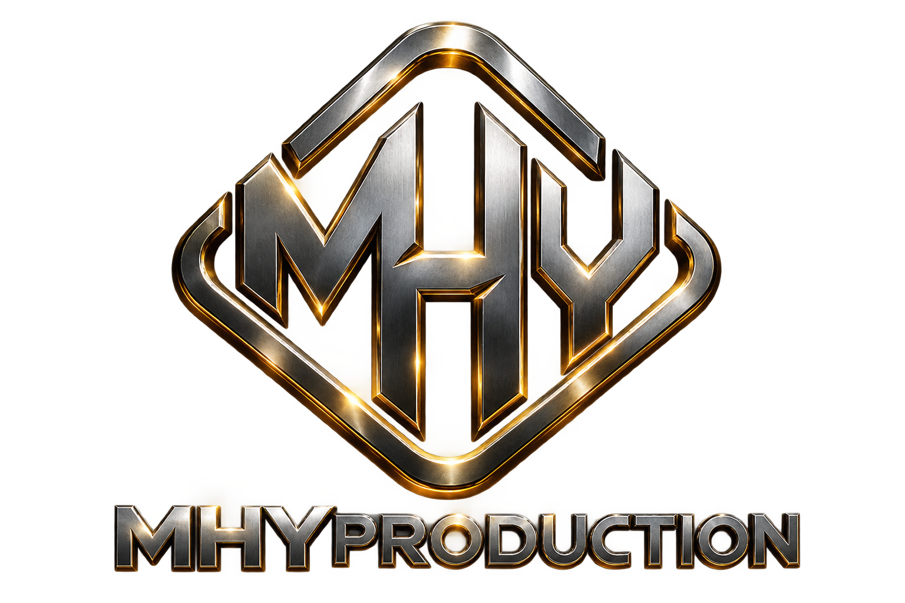

<!doctype html><html lang="ar" dir="rtl"><meta charset="utf-8"><meta name="viewport" content="width=device-width,initial-scale=1"><title>MHYPRODUCTION — المكتبة</title><link rel="stylesheet" href="cinema.css"><header><a href="#" class="brand"><span>MHYPRODUCTION<small>THE STUDIO LIBRARY</small></span></a><button id="language">English</button></header><main><div class="intro"><p class="eyebrow">MHYPRODUCTION · <span data-ar="نسخة للمراجعة" data-en="Review edition"></span></p><h1 data-ar="لكل حكاية… عالمها" data-en="Every story has a world."></h1><p data-ar="أفلام، موسيقى وصور. اكتشف مكتبتنا من مكان واحد." data-en="Film, music and imagery. Explore our creative library."></p></div><nav id="crumb"></nav><section id="content"></section></main><footer>MHYPRODUCTION <span data-ar="— من الخيال إلى الشاشة" data-en="— From imagination to screen"></span><a href="https://mhyahfoufi.github.io/Mhyproduction/" data-ar="الموقع الرسمي" data-en="Official website"></a></footer><script src="../assets/content-data.js"></script><script src="../assets/library-index.js"></script><script src="cinema.js"></script></html>
